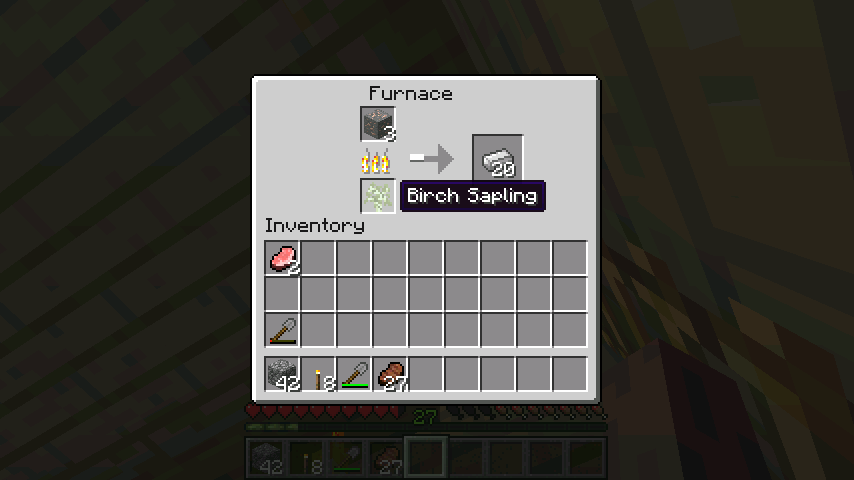
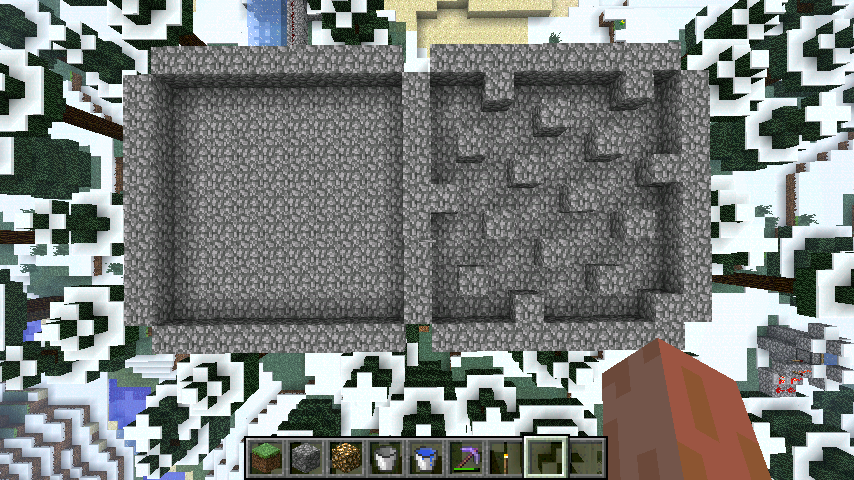

首页
上一页
31
32
33
34
35
36
36
37
38
39
40
41
下一页
末页
defanive2
无尽黑夜
14
7个钻石，鸭梨不大
——来自 MCLive
1627楼
2012-08-16 01:36
defanive2
无尽黑夜
14
我了个去连着一个天然洞。。
没什么兴趣，封掉。。
——来自 MCLive
1628楼
2012-08-16 01:38
defanive2
无尽黑夜
14
最后一个附魔石稿也挖完了，因为没有unbreakingIII
收获，还不错
——来自 MCLive
1629楼
2012-08-16 01:41
defanive2
无尽黑夜
14
7种矿石都收集齐了！
——来自 MCLive
1630楼
2012-08-16 01:42
defanive2
无尽黑夜
14
一只僵尸又寂寞了。。
——来自 MCLive
1631楼
2012-08-16 01:45
defanive2
无尽黑夜
14
我发现我家的屋檐是个很悲剧的东西，怪物都躲在屋檐下面不走了
不过这点怪物小意思
——来自 MCLive
1632楼
2012-08-16 01:47
defanive2
无尽黑夜
14
其实树苗是很有用的燃料。。
2个树苗可以烤一个东西。。
对于经常砍树的同学来说一大堆的树苗除了种还可以用来烤东西
例如落单的单个矿物，不想浪费煤又不想等待的话可以用2个树苗烤了
燃料相信大家用的都是煤和木炭
其实还可以是火焰棒，热量很给力
另外岩浆桶也是不错的，1.3.1里面会把桶给回来了
总之燃料是可以精打细算的，省一点是一点
保持 资源总是紧缺 这种想法，嗯也算是保护环境了
——来自 MCLive

1633楼
2012-08-16 01:53
defanive2
无尽黑夜
14
现在的矿物储备，也算不错
钻石少了点，一组都没有
其他都还可以
PS 绿宝石没有稳定来源了，看来迟早要去找下一个村庄
——来自 MCLive
1634楼
2012-08-16 01:56
defanive2
无尽黑夜
14
红石这边，自从对红石矿也开始用fortuneIII之后，多了一大堆
我觉得这辈子都用不完了
——来自 MCLive
1635楼
2012-08-16 01:57
defanive2
无尽黑夜
14
鹅卵石还是照旧有一箱
——来自 MCLive
1636楼
2012-08-16 01:57
defanive2
无尽黑夜
14
而之前另外半箱的鹅卵石用来造END小黑塔之后就没了
取而代之的是挖矿得来的半箱圆石
PS silk touch都变成无谓的附魔了，石稿真是个碉堡的介质。。
——来自 MCLive
1637楼
2012-08-16 01:58
defanive2
无尽黑夜
14
这一堆无聊的泥土和沙砾。。我想扔掉。。
——来自 MCLive
1638楼
2012-08-16 01:59
defanive2
无尽黑夜
14
木材及木制品暂时还充足，不够的话就种一棵雨林树砍了就够了
白桦木板很久都没用过了，最近也没建新房子
——来自 MCLive
1639楼
2012-08-16 02:00
defanive2
无尽黑夜
14
种植业这方面收成还是很稳定的，没什么鸭梨
是不是应该开始一些次要资源的农场呢？
例如仙人掌，蔓藤，可可豆
这些虽然是次级资源，不过有农场总比没有好？
嗯明天就再挖一个地下室建这个吧
——来自 MCLive
1640楼
2012-08-16 02:04
defanive2
无尽黑夜
14
食物这方面没什么问题，加上放在END的蘑菇汤
基本上都不需要怎么担心了
——来自 MCLive
1641楼
2012-08-16 02:04
defanive2
无尽黑夜
14
怪物掉落也没什么亮点，该收集的都收集全了
END还有2箱半的小黑珍珠。。。。
——来自 MCLive
1642楼
2012-08-16 02:05
defanive2
无尽黑夜
14
各色羊毛，已经展示过了
也是收藏价值高于实用价值
——来自 MCLive
1643楼
2012-08-16 02:06
defanive2
无尽黑夜
14
一些收藏品
唯一欠缺的就是CD，明天可以造一个CD工厂刷很多的CD
——来自 MCLive
1644楼
2012-08-16 02:07
defanive2
无尽黑夜
14
地狱和遗迹的东西
都没怎么挖地狱堡垒和遗迹，MC的特色建筑物还是保留比较好
地狱堡垒还没找到孢子，实在是寂寞啊
找到孢子了可以炼药，做收藏
——来自 MCLive
1645楼
2012-08-16 02:09
defanive2
无尽黑夜
14
最后寂寞的一个附魔箱子，里面的都是一些不三不四的附魔
例如石稿时运3+效率4+耐久3，用来挖石头觉得浪费，但是除了石头就只能挖煤。。
还有例如石稿就一个silk touch。。
铁镐一个是时运2+效率4+耐久3，用来挖钻石什么的不需要，我有时运3的铁镐和钻石稿
另外一个铁镐就是寂寞的效率4+耐久3，用来挖石头觉得浪费。。
总之这些附魔都很无语，还有一些钻石工具的附魔也很无语
——来自 MCLive
1646楼
2012-08-16 02:12
defanive2
无尽黑夜
14
这个箱子是1楼的，里面都是常用的工具
3把时运3的钻石稿，1把silk touch的钻石稿
剩下的都是耐久和效率之类的附魔，也是很无语的组合
剑的话有1把抢夺2，另外2把分别是锋利4和锋利2
弓都没有附魔出什么好东西，力量4倒是出了很多
其他亮点没有，3组的箭都是从骷髅刷怪塔刷来的
——来自 MCLive
1647楼
2012-08-16 02:15
defanive2
无尽黑夜
14
主楼的防具箱子
头盔是弓箭保护4+水下呼吸+水下挖矿
胸甲和护腿都是保护3
鞋子是爆炸保护3和feather falling IV
一套起来很碉堡，就差火焰保护了
我应该再造一个护腿，然后附魔看看能不能出火焰保护
另外两个附魔的头盔和鞋子都是一般般的东西，火焰保护3和保护3
——来自 MCLive
1649楼
2012-08-16 02:17
defanive2
无尽黑夜
14
好了全部家产清点完毕
房产有房子，羊、牛农场，骷髅塔，僵尸塔，END小黑塔，烈焰人塔，地狱的渣房
穿上全身的附魔装，来合影一张！
——来自 MCLive
1651楼
2012-08-16 02:22
defanive2
无尽黑夜
14
今天就玩到这里了，保存退出
PS 挖矿都挖到LV27了，明天应该附魔什么呢？
——来自 MCLive
1652楼
2012-08-16 02:23
defanive2
无尽黑夜
14
好了我来回复一下大家的评论
1653楼
2012-08-16 02:24
defanive2
无尽黑夜
14
好吧去睡觉了，明天要去跟同学出去玩，能不能播还不一定
目标貌似是暂时还没定
博物馆？
可可豆，仙人掌或者是蔓藤种植场？
地铁？
刷怪笼造塔？
探险环游世界？
不知道，明天再说吧。。
1657楼
2012-08-16 03:07
defanive2
无尽黑夜
14
好了下午出去玩了，晚上来直播。。
应该做什么呢，大家给点意见，好像挺无聊的。。
先去建一个冰场吧，收获冰
PS 正在测试关于冰场产量效率的一个问题
1681楼
2012-08-16 20:09
defanive2
无尽黑夜
14
我了个去，本来想把3000L留给自己的，结果吃完饭回来一看都已经3100+了
于是LZ本人到现在都没抢过一次楼。。
好吧，现在这个帖子， 60366次浏览，3106次回复，还有214次顶
感谢大家的支持，我继续直播
1683楼
2012-08-16 20:32
defanive2
无尽黑夜
14
经过测试的两种冰工厂
结果表明右边比左边的效率要高很多
我来详解一下
——来自 MCLive

1685楼
2012-08-16 20:53
defanive2
无尽黑夜
14
在雪原生态里面，只要水源直接暴露在天空下，并且非天顶光源不达到亮度12的话，就会缓慢结冰
但是在E文wiki里面又提到了一条，大意是，测试表明，向四周流动的水源似乎不会结冰
然后我就继续进行测试，结果是，水源周围只要都是水，那么就不会结冰
因此冰工厂要保证每一个水源都要与一个方块相邻
1687楼
2012-08-16 20:57
首页
上一页
31
32
33
34
35
36
36
37
38
39
40
41
下一页
末页